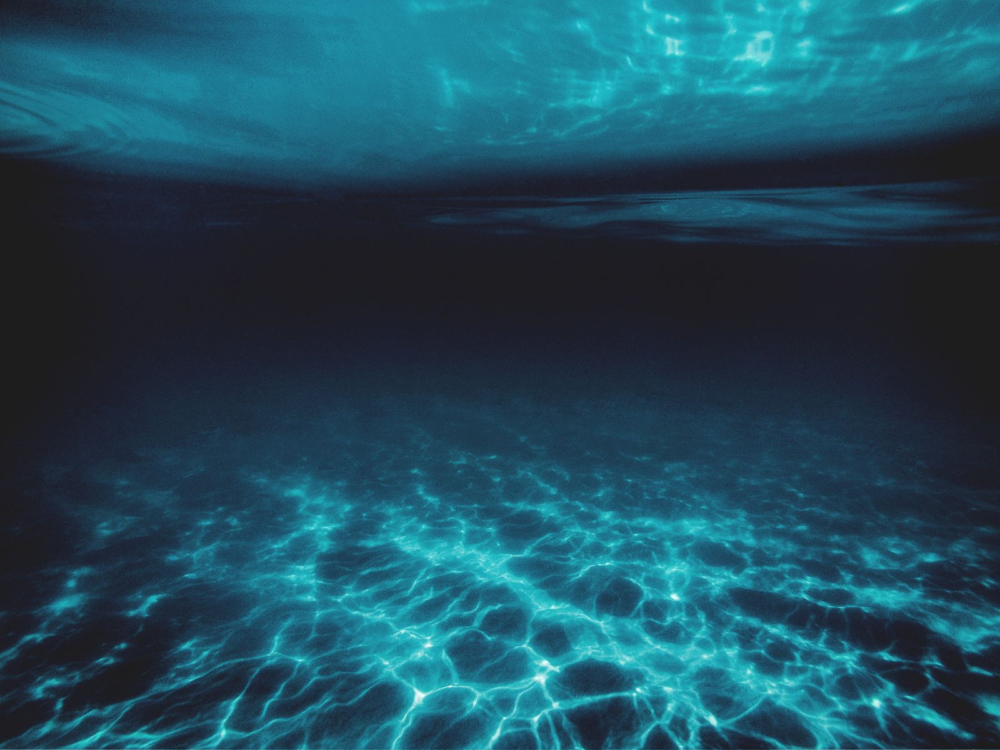

Cruise log 01 · Resurvey
The field that moved: resurveying K-3 after the eruption
The brief
This practice surveyed the mussel beds of Field K-3, on a northern Mid-Atlantic segment, in 2021. Between that cruise and this one, the segment erupted. The consortium's brief was one sentence long: go back, re-shoot the same photoquadrats, and say exactly what changed — because three years of monitoring funding depended on knowing whether the time series had survived the eruption or ended with it.
The decisions
The 2021 quadrat positions were re-occupied from the original navigation, not re-chosen for convenience — a resurvey that quietly moves its quadrats measures nothing. Where the old ground was buried, the quadrat was photographed anyway and logged as lost, all 96 accounted for. Two dives were given to the fissure line east of the old field, where the shimmering water said the flow had gone, before any sampling was authorised there.
The outcome
The bed had not died; it had moved roughly 40 metres along the fissure, tracking the new flow, and the old ground was pavement and ash. The time series survived — re-based, with the shift measured rather than smoothed over. The deliverable was a revised distribution map, a quadrat-by-quadrat change account, and a recommendation the consortium adopted: a three-year resurvey interval for K-3, shortening to one year if the segment erupts again.
“Tomás's team re-shot our 2021 quadrats to the metre and told us plainly which comparisons the new ground would not support. The resurvey changed our monitoring plan — and the report was the first cruise document our reviewers returned without a single query on method.”